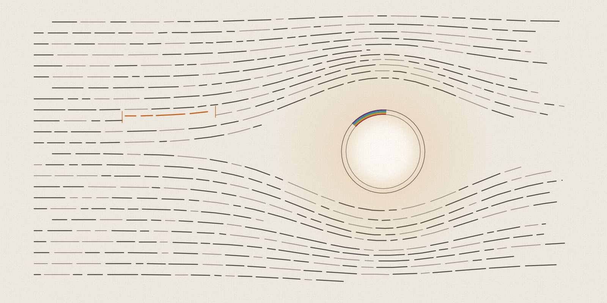

Articulate
A writing checker that runs on your own computer.

In short
Articulate checks prose for the habits that make writing hard to read and hard to trust, such as hedging, filler words and stock phrases. Its checks run on your own computer with no network connection. This site checks its pages with it.
What it is
Articulate is a Python command-line tool that checks prose for hedging, filler, stock phrasing and other patterns common in machine-written text, and scores how machine-textured a passage reads. Its checks run locally with no network call, and a check can leave a receipt that replays the verdict later and keeps no verbatim source text.
Each check runs in a writing mode, such as a memo that argues a case or technical documentation that explains. The mode sets which patterns count and how strictly. Fiction, memoir, screenplays and poetry each get their own reading. Under a fiction mode, a character's quoted line is never scored as the author's prose.
Install and run a check
pip install articulate-writing
articulate check notes.md --mode technical-docs/explain --gatePick the mode that fits the text. articulate modes lists them all. With --gate, the command exits with 1 when the text is blocked, so a script or a CI job can stop on it. The core needs nothing beyond Python's standard library.
One example check
This sentence went in:
It is important to note that this release really represents a significant step forward. Arguably, the new cache could potentially make builds faster in many cases.
Articulate blocked it with four findings. Each finding also prints the line it came from, cut here for width.
[articulate] notes.md [technical-docs/explain]: 1 high, 3 medium (blocked) texture 0/100
L1 [HIGH filler-intensifier] genuinely / really / truly / actually
L1 [MEDIUM throat-clearing] throat-clearing opener
L1 [MEDIUM hedge-stack] stacked hedge
L1 [MEDIUM throat-clearing] worth-noting preambleA rewrite that names the change and gives a measured number passes the gate. The numbers here are made up for the example.
This release adds a build cache. On our test project, a clean build took 41 seconds and a cached build took 9.
[articulate] notes.md [technical-docs/explain]: unverifiable (below the signal floor) texture 0/100The command exits with 0. The word unverifiable refers to the texture score: two sentences are too short to say how machine-textured the text reads.
What a clean check tells you
A clean check means none of the patterns Articulate knows appeared in the text. It says nothing about whether the writing is true or clear, so a reader still needs the sources. The documentation states that Articulate is not a tool for evading AI detection. Writing quality is the goal, and a detector score is a side effect it never aims at.
Receipts
A receipt records a check so that anyone can replay it later against the same file.
articulate receipt notes.md --mode technical-docs/explain --redact drop > notes.receipt.json
articulate verify notes.receipt.json notes.mdThe replay gives one of three answers. Match means the file gives the same findings again. Drift means the same text under the same rules now gives different findings. Unverifiable means the replay cannot run as recorded, for example because the file changed after the receipt was made. With --redact drop, the receipt keeps no verbatim text from the file. It still records which rule fired on which line, and a rule named after a short word list narrows the flagged word to that list.
Editing
Three tools read and rewrite prose. Judge names problems a pattern rule cannot see, such as a claim with no position behind it. Fix rewrites a passage to the standard and checks its own result. Polish repeats until the prose clears a bar for concreteness, commitment, economy, rhythm and one restatable fact per paragraph. They run through articulate-mcp, the MCP server that comes with the package, and they need a language model, either a local one or the claude command-line tool.
In an editor, the articulate-lsp server shows findings inline in any editor that speaks the Language Server Protocol, such as VS Code, a JetBrains IDE or Neovim.
Releases
Articulate 0.1.0 reached PyPI on 18 September 2026. Version 0.4.1 followed on 24 September 2026, the fifth release in that span.
This page was written with AI assistance and checked with Articulate.
How we know
- Release dates come from the upload times on PyPI's release history, in UTC: 0.1.0 at 13:07 on 18 September 2026 and 0.4.1 at 03:14 on 24 September 2026. The matching GitHub releases carry the same dates. File hashes for each release are listed on PyPI.
- The example output above is from Articulate 0.4.1, run on 25 September 2026. The receipt answers come from the same run: a replay of the unchanged file gave match, and a replay after one added line gave unverifiable.
- The no-network claim rests on the project README, which says the detector never touches the network, and on a search of the 0.4.1 check, receipt and command-line code, which found no network library imported. The editing tools call a language model, so they are outside that claim.
- This page does not show that Articulate finds every weak pattern, or that its findings agree with a human editor. The package ships a benchmark,
python -m articulate.bench, for anyone who wants to test that.